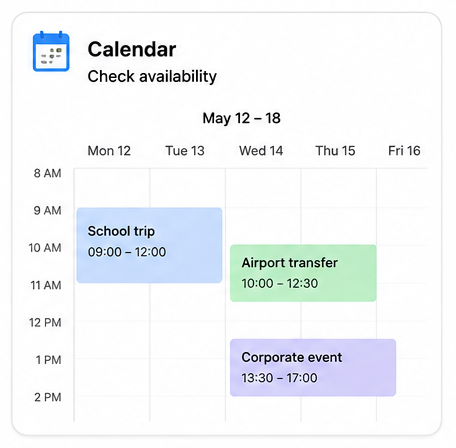
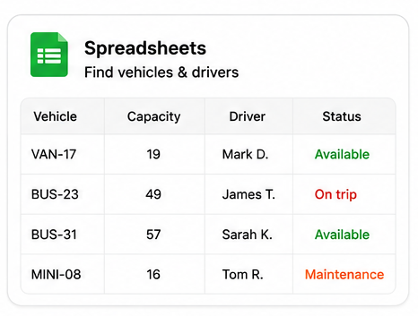
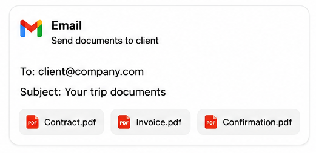
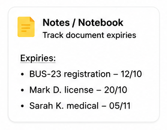
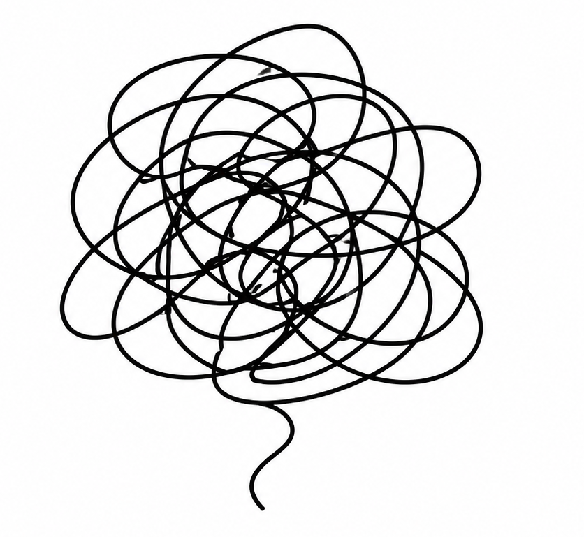
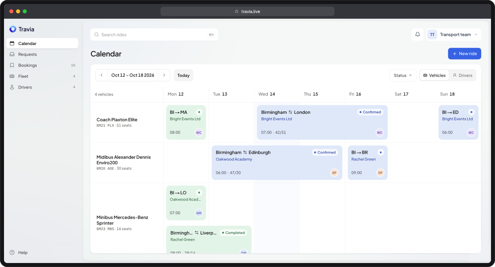
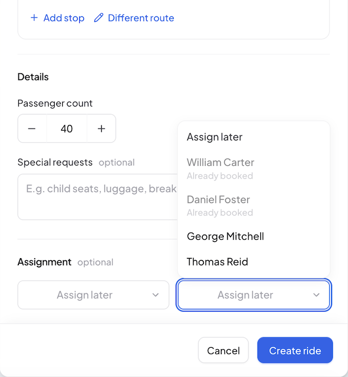
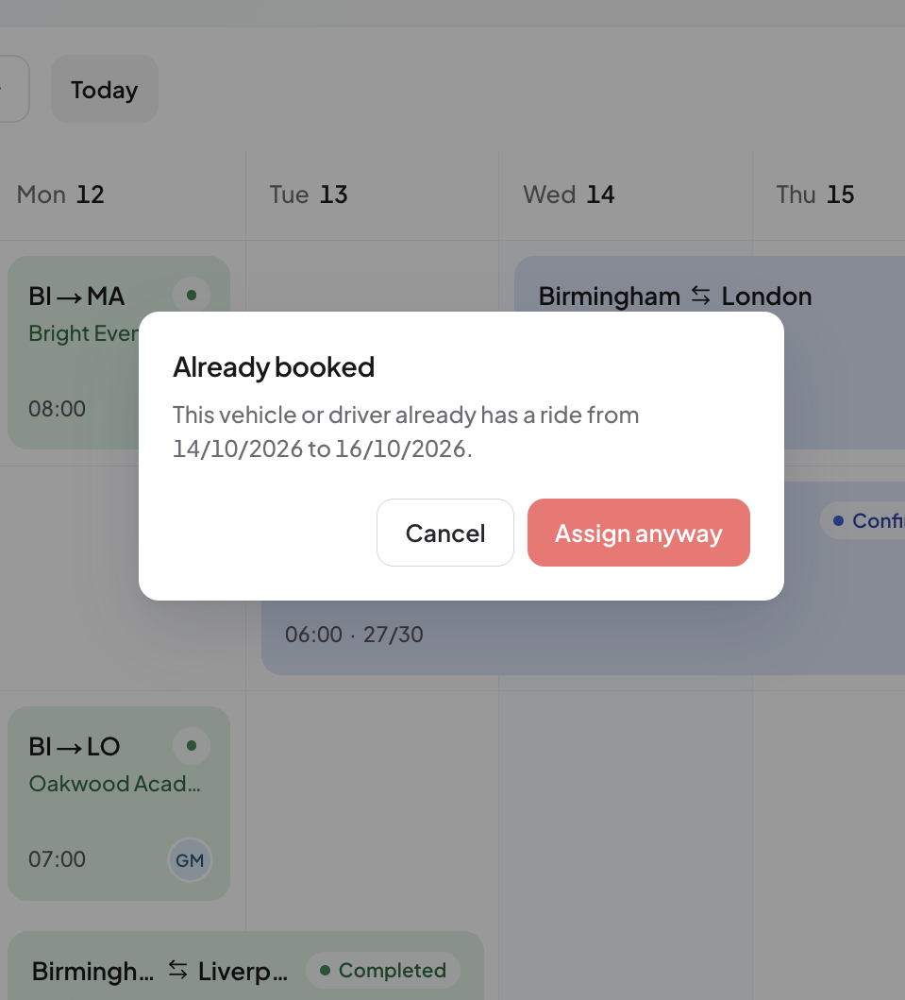
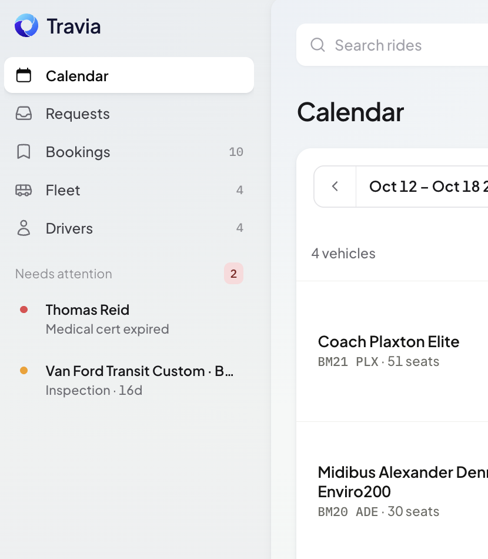
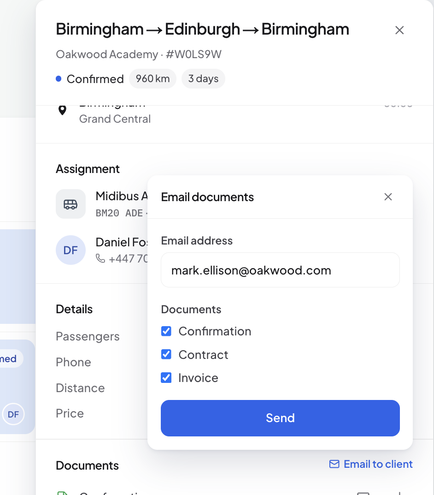

One connected calendar
Bookings, vehicles, and driver assignments in one view.
01 — THE PROBLEM
Running a transport business means juggling bookings, vehicles, drivers, and paperwork across disconnected tools.
A dispatcher might check availability in a calendar, find a vehicle in a spreadsheet, confirm a driver through WhatsApp, prepare contracts, send documents by email, and track expiry dates separately.
With information scattered everywhere, keeping everything in sync becomes a manual job. Double bookings, expired documents, and missing paperwork become easier to overlook.
The problem wasn’t a lack of tools. It was that none of them worked together.
One booking. Multiple tools. Everything connected manually.





02 — THE SOLUTION
Travia brings ride scheduling, fleet and driver management, document tracking, and client paperwork into one connected platform.
At its core is a calendar that gives dispatchers a clear overview of upcoming rides and drives the rest of the workflow, from assignments to paperwork to expiry reminders.
The calendar also drives the rest of the workflow. Dispatchers can assign vehicles and drivers directly from the schedule, booking conflicts are flagged, client documents are generated automatically, and upcoming document expirations are surfaced before they become urgent.
Instead of switching between tools and manually coordinating every step, dispatchers can manage the operation from a single workspace.

The key design decision was to make the booking the starting point for the workflow, not just an entry in the calendar.
A ride needs more than a date and time. It needs a suitable vehicle, an available driver, and the right paperwork. By keeping all of that attached to the booking, dispatchers can see what’s been assigned, catch conflicts as they appear, and open related details without searching across separate tools.
Bookings, vehicles, and driver assignments in one view.
Confirmations, contracts, and invoices generated from bookings.
Vehicle, driver, availability, and document records together.
Visibility into upcoming registration, inspection, and driver-document deadlines.




08 — DESIGN APPROACH
I approached Travia by focusing on the core operational workflow: scheduling rides, assigning vehicles and drivers, and managing the documents tied to each booking.
Rather than designing scheduling, fleet management, and paperwork as separate features, I designed them around the same workflow, so every screen connects back to the booking it supports.
To keep the experience coherent across the calendar, fleet and driver records, document management, and authentication, I built a shared design system of reusable components and consistent visual patterns.
Carrier dispatch & booking platform — design system
Every token and component shown here is extracted directly from the shipped product’s source — not drafted separately and retrofitted.